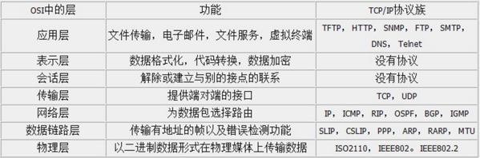
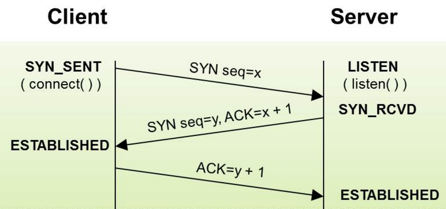

TCP（Transmission Control Protocol 传输控制协议）是一种面向连接的、可靠的、基于字节流的传输层通信协议。TCP工作在网络OSI七层模型中的第四层-传输层，下面一张图展示OSI七层模型及每一层的作用和对应的协议。
TCP是传输层协议，在进行数据传输之前使用三次握手协议建立连接，大体的过程是客户端发出SYN连接请求后，服务端接收请求后应答SYN+ACK，客户端收到服务端应答后应答ACK，这种建立连接的方法可以防止产生错误的连接，防止已失效的连接请求报文段突然又传送到了服务端。TCP三次握手过程图示如下：
 TCP三次握手过程描述如下：1.客户端发送SYN标志位为1，Sequence Number为x的连接请求报文段，然后客户端进入SYN_SEND状态，等待服务器的确认响应；
2.服务器收到客户端的连接请求，对这个SYN报文段进行确认，然后发送Acknowledgment Number为x+1(Sequence Number+1)，SYN标志位和ACK标志位均为1，Sequence Number为y的报文段（即SYN+ACK报文段）给客户端，此时服务器进入SYN_RECV状态；
3.客户端收到服务器的SYN+ACK报文段，确认ACK后，发送Acknowledgment Number为y+1，SYN标志位为0，ACK标志位为1的报文段，发送完成后，客户端和服务器端都进入ESTABLISHED状态，完成TCP三次握手，客户端和服务器端成功地建立连接，可以开始传输数据了。当数据传送完成后，为了正确完整的完成数据传输，需要经过四次挥手断开连接。TCP四次挥过程图示如下：
1.客户端发送Sequence Number为x+2，Acknowledgment Number为y+1的FIN报文段，客户端进入FIN_WAIT_1状态，即告诉服务端没有数据需要传输了，请求关闭连接；
2.服务端收到客户端的FIN报文段后，向客户端应答一个Acknowledgment Number为Sequence Number+1的ACK报文段，即应答客户端你的请求我收到了，但是我还没准备好，请等待我的关闭请求。客户端收到后进入FIN_WAIT_2状态；
3.服务端完成数据传输后向客户端发送Sequence Number为y+1的FIN报文段，请求关闭连接，服务器进入LAST_ACK状态；
4.客户端收到服务端的FIN报文段后，向服务端应答一个Acknowledgment Number为Sequence Number+1的ACK报文段，然后客户端进入TIME_WAIT状态；服务端收到客户端的ACK报文段后关闭连接进入CLOSED状态，客户端等待2MSL后依然没有收到回复，则证明服务端已正常关闭，客户端此时关闭连接进入CLOSED状态。